🔭 伽利略：伽利莱
Galileo Galilei · 设计：Tomáš Holek / Michal Peichl · Pink Troubadour 出版（官方中文规则书，中文翻译 & 排版：陈斌华）
本页整理自微信公众号「桌游怎么玩」《伽利略，Galileo Galilei【桌游规则】》发布的 Pink Troubadour《Galileo Galilei》官方中文规则书（中文翻译 & 排版：陈斌华，共 20 页），逐页全文转录，原书扫描图随文嵌入——点击任意图片即可放大查看。规则内容归 Pink Troubadour 及版权方所有，转录仅供个人学习查阅。
整理说明：原书官译用语（「观察骰」「特别法庭」「审问者的告别」「彗星之书」等）照录。P.20「将其翻面刀金色已升级面」之「刀」字系原书排印如此（应为「到」），照录；P.16 设置第 7 条原文「洗混第谷的行动板块，并将它们组成一副牌」。无法完全确认处已标注〔?〕。经人工逐页放大核对，存疑处两遍交叉验证。
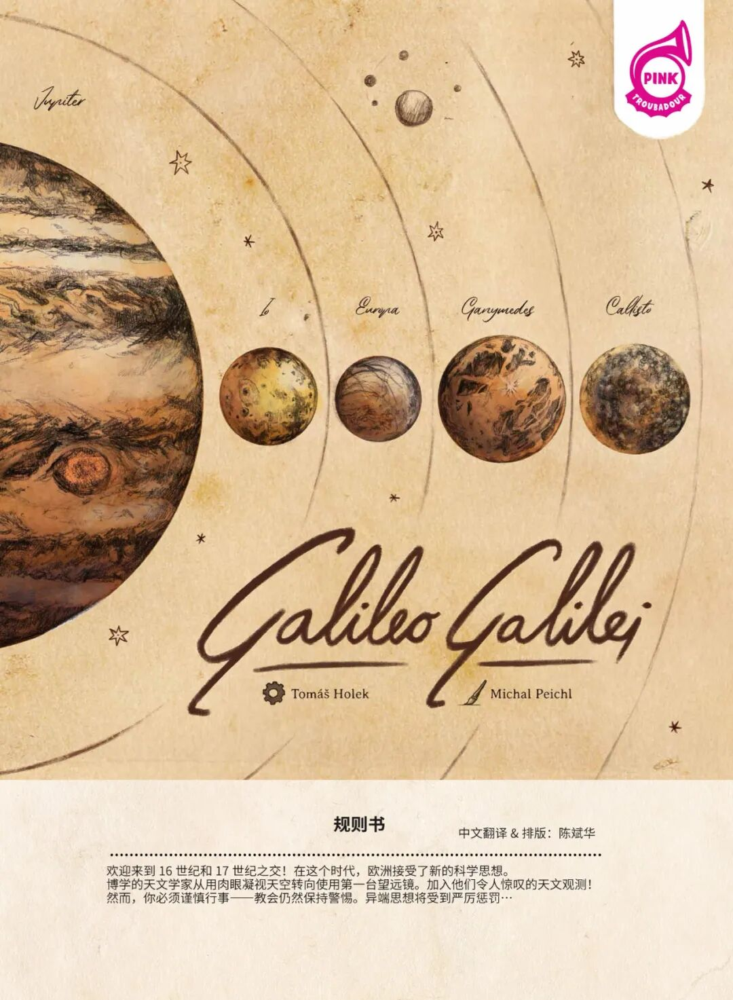
欢迎来到 16 世纪和 17 世纪之交！在这个时代，欧洲接受了新的科学思想。博学的天文学家从用肉眼凝视天空转向使用第一台望远镜。加入他们令人惊叹的天文观测！然而，你必须谨慎行事——教会仍然保持警惕。异端思想将受到严厉惩罚……
一、配件
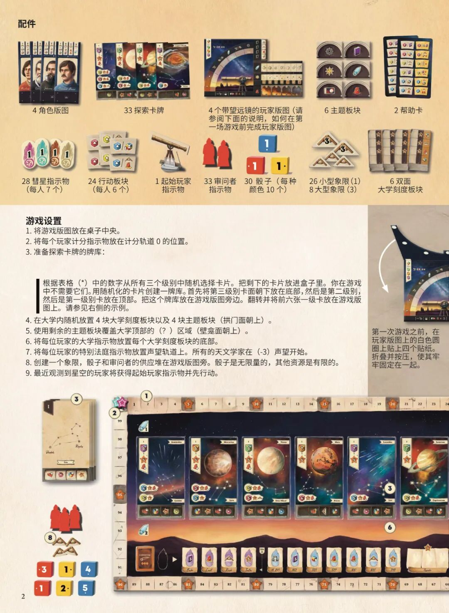
- 4 角色版图
- 33 探索卡牌
- 4 个带望远镜的玩家版图（请参阅下面的说明，如何在第一场游戏前完成玩家版图）
- 6 主题板块
- 2 帮助卡
- 28 彗星指示物（每人 7 个）
- 24 行动板块（每人 6 个）
- 1 起始玩家指示物
- 33 审问者指示物
- 30 骰子（每种颜色 10 个）
- 26 小型象限（1）/ 8 大型象限（3）
- 6 双面大学刻度板块
- 16 书本指示物（每人 4 个）
- 16 大学指示物（每人 4 个）
- 16 特别法庭指示物（每人 4 个）
- 4 计分指示物（每人 1 个）
- 28 星座指示物（每人 7 个）
- 16 目标指示物（每人 4 个）
- 1 游戏版图
单人游戏配件
- 5 单人行动板块
- 1 第谷·布拉赫对手板块
- 1 第谷·布拉赫书本指示物
- 6 单人移动板块
进阶游戏配件
- 1 焦尔达诺·布鲁诺地窖板块
- 4 尼古拉斯·哥白尼图书馆板块
- 1 约翰内斯·开普勒特殊行动板块
游戏开始前：用铆钉固定望远镜。确保望远镜运动平稳。（第一次游戏之前，在玩家版图上的白色圆圈上贴上 4 个贴纸。折叠并按压，使其牢牢固定在一起。）
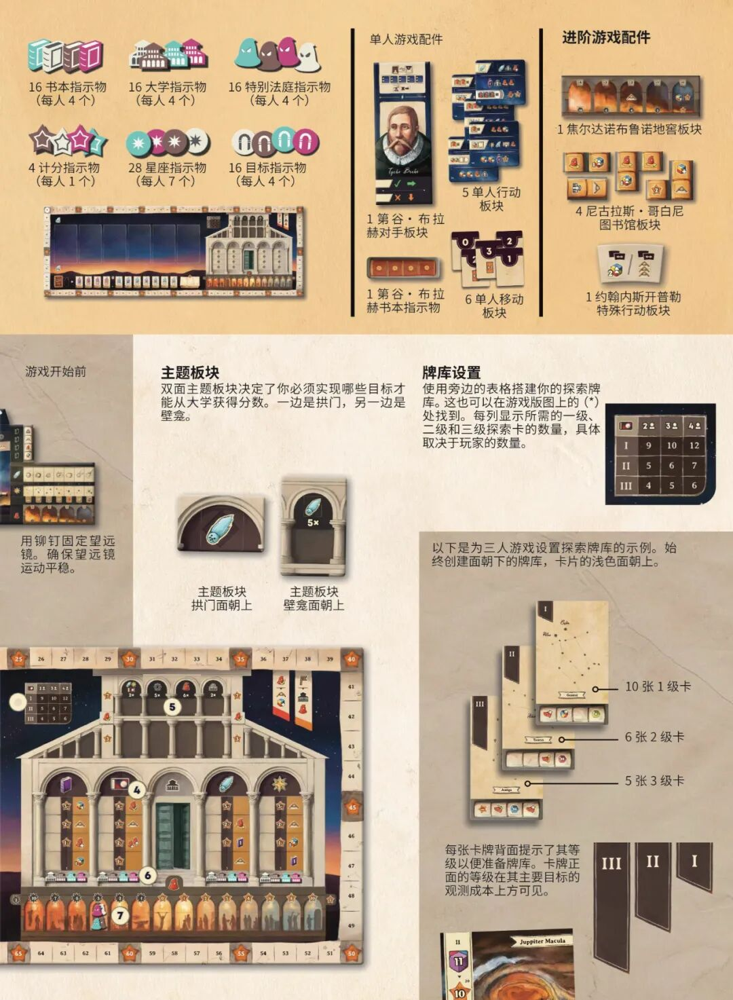
主题板块
双面主题板块决定了你必须实现哪些目标才能从大学获得分数。一边是拱门，另一边是壁龛。
牌库设置
使用旁边的表格搭建你的探索牌库。这也可以在游戏版图上的（*）处找到。每列显示所有的一级、二级和三级探索卡的数量，具体取决于玩家的数量。
| 玩家人数 | 一级卡 | 二级卡 | 三级卡 |
|---|---|---|---|
| 2 名玩家 | 9 | 5 | 4 |
| 3 名玩家 | 10 | 6 | 5 |
| 4 名玩家 | 12 | 7 | 6 |
以下是三人游戏设置探索牌库的示例。始终创建面朝下的牌库，卡片的浅色面朝上。（示例：10 张 1 级卡、6 张 2 级卡、5 张 3 级卡。）每张卡牌背面提示了其等级以便准备牌库。卡牌正面的等级在其主要目标的观测成本上方可见。
二、玩家设置
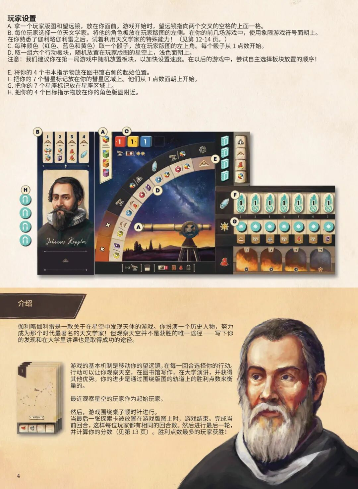
- A. 拿一个玩家版图和望远镜，放在你面前。游戏开始时，望远镜指向两个交叉的空格的上面一格。
- B. 每位玩家选择一位天文学家。将他的角色板放在玩家版图的左侧。在你的前几场游戏中，使用象限游戏符号面朝上。在你熟悉了伽利略伽利雷之后，试着利用天文学家的特殊能力！（见第 12-14 页。）
- C. 每种颜色（红色、蓝色和黄色）取一个骰子，放在玩家版图的左上角。每个骰子从 1 点数开始。
- D. 取一组六个行动板块，随机放置在玩家版图的星空上，浅色面朝上。
注意：我们建议你在第一局游戏中随机放置板块，以加快设置速度。在以后的游戏中，尝试自主选择板块放置的顺序！ - E. 将你的 4 个书本指示物放在图书馆右侧的起始位置。
- F. 把你的 7 个彗星标记放在你的彗星区域上。他们从 1 点数面朝上开始。
- G. 把你的 7 个星座标记放在星座区域上。
- H. 把你的 4 个目标指示物放在你的角色版图附近。
介绍
伽利略伽利雷是一款关于在星空中发现天体的游戏。你扮演一个历史人物，努力成为那个时代最著名的天文学家！但观察天空并不是获胜的唯一途径——写下你的发现和在大学里讲课也是取得成功的途径。
游戏的基本机制是移动你的望远镜，在每一回合选择你的行动。行动可以让你观察天空，在图书馆写作，在大学演讲，并获得其他优势。你的进步是通过围绕版图的轨道上的胜利点数来衡量的。
最近观察星空的玩家作为起始玩家。然后，游戏围绕桌子顺时针进行。
当最后一张探索卡被放置在游戏版图上时，游戏结束。完成当前最后一轮，这样每位玩家都有相同的回合数。然后进行最后一轮，并计算你的分数（见第 13 页）。胜利点数最多的玩家获胜！
三、回合结构
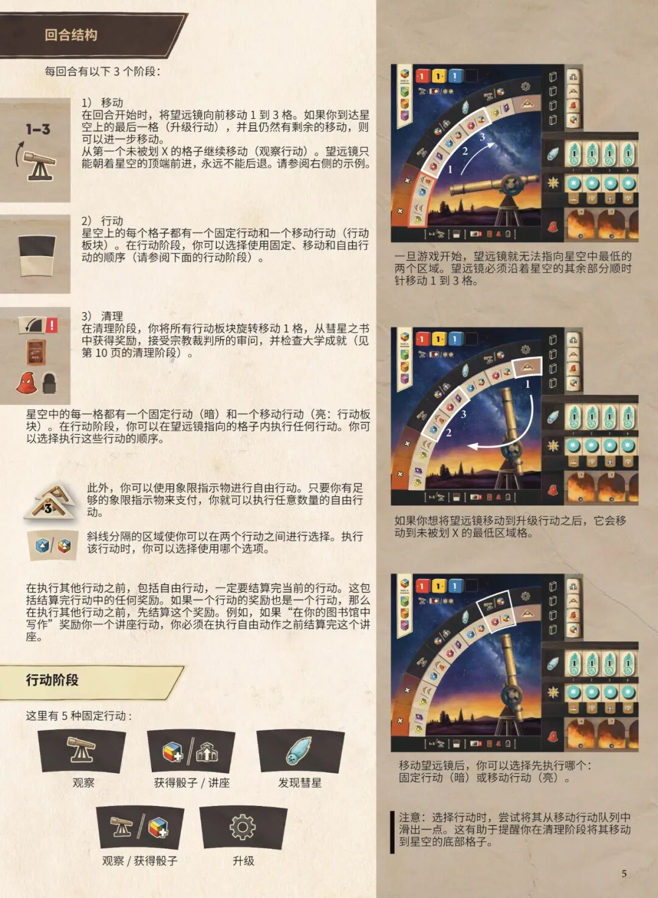
每回合有以下 3 个阶段：
1）移动（1–3）
在回合开始时，将望远镜向前移动 1 到 3 格。如果你到达星空上的最后一格（升级行动），并且仍然有剩余的移动，则可以进一步移动。从一个未被划 X 的格子继续移动（观察行动）。望远镜只能朝着星空的顶端前进，永远不能后退。请参阅右侧的示例。
2）行动
星空上的每个格子都有一个固定行动和一个移动行动（行动板块）。在行动阶段，你可以选择使用固定、移动和自由行动的顺序（请参阅下面的行动阶段）。
3）清理
在清理阶段，你将所有行动板块旋转移动 1 格，从彗星之书中获得奖励，接受宗教裁判所的审问，并检查大学成就（见第 10 页的清理阶段）。
星空上的每一格都有一个固定行动（暗）和一个移动行动（亮：行动板块）。在行动阶段，你可以在望远镜指向的格子内执行任何行动。你可以选择执行这些行动的顺序。
此外，你可以使用象限指示物进行自由行动。只要你有足够的象限指示物来支付，你就可以执行任意数量的自由行动。
斜线分隔的区域使你可以在两个行动之间进行选择。执行该行动时，你可以选择使用哪个选项。
在执行其他行动之前，包括自由行动，一定要结算完当前的行动。这包括结算完行动中的任何奖励。如果一个行动的奖励也是另一个行动，那么在执行其他行动之前，先结算这个奖励。例如，如果「在你的图书馆中写作」奖励你一个讲座行动，你必须在执行自由行动之前结算完这个讲座。
行动阶段
这里有 5 种固定行动：观察、获得骰子 / 讲座、发现彗星、观察 / 获得骰子、升级。
- 一旦游戏开始，望远镜就无法指向星空中最低的两个区域。望远镜必须沿着星空的其余部分顺时针移动 1 到 3 格。
- 如果你想将望远镜移动到升级行动之后，它会移动到未被划 X 的最低区域格。
- 移动望远镜后，你可以选择先执行哪个：固定行动（暗）或移动行动（亮）。
- 注意：选择行动时，尝试将其从移动行动队列中滑出一点。这有助于提醒你在清理阶段将其移动到星空的底部格子。
四、观察
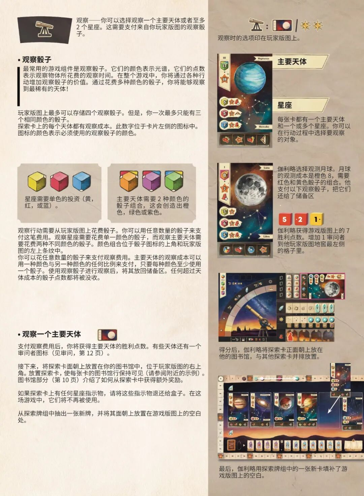
观察——你可以选择观察一个主要天体或者最多 2 个星座。这需要支付来自你玩家版图的观察骰子。（观察时的选项印在玩家版图上。）
· 观察骰子
最常用的游戏组件是观察骰子。它们的颜色表示光谱，它们的点数表示观察物体所花费的观察时间。在整个游戏中，你将通过各种行动增加观察骰子的价值。通过花费多种颜色的骰子，你将能够观察到最稀有的天体！
玩家版图上最多可以存储四个观察骰子。但是，你一次最多只能有三个相同颜色的骰子。
探索卡上的每个天体都有观察成本。此数字位于卡片左侧的图标中。图标的颜色表示必须使用的观察骰子的颜色。
星座需要单色的投资（黄，红，或蓝）。主要天体需要 2 种颜色的骰子组合，这会创造出橙色，绿色或紫色。
观察行动需要从玩家版图上花费骰子。你可以用任意数量的骰子来支付这笔费用。观察星座需要花费单一颜色的骰子，而观察主要天体需要费用两种不同颜色的骰子。颜色组合位于骰子图标的上角和玩家版图的左上条纹中。
你可以花任意数量的骰子来支付观察费用。主要天体的观察成本可以用一种颜色与另一种颜色的任何比例来支付，只要每种颜色至少使用一个骰子。使用观察骰子进行观察后，将其放回储备区。任何超过天体成本的骰子点数都将被没收。
· 观察一个主要天体
支付观察费用后，你将获得主要天体的胜利点数。有些天体还有一个审问者图标（见审问，第 12 页）。
接下来，将探索卡面朝上放置在你的图书馆中，位于玩家版图的右上角。放置探索卡，使每张卡的图书馆行保持可见（请参阅附近的示例）。图书馆部分（第 10 页）介绍了如何从探索卡中获得额外奖励。
如果探索卡上有任何星座指示物，请将这些指示物退还给盒子。在这场游戏中，它们将不再被使用。
从探索牌组中抽出一张新牌，并将其面朝上放置在游戏版图上的空白处。
示例：每张卡都有一个主要天体和一个或多个星座，你可以在行动过程中选择要观察的对象。伽利略选择观测月球，月球的观测成本是橙色 8，需要红色和黄色骰子的组合。他支付 5 红、2 黄、1 黄三个观察骰子，把它们还给了储备区，获得游戏版图上的 7 胜利点数，并增加 1 审问者到玩家版图地窖最左侧的格子里。得分后，伽利略将探索卡正面朝上放在他的图书馆，与其他探索卡并排放置。最后，伽利略用探索牌组中的一张新卡填补了游戏版图上的空白。
五、观察星座 · 获得骰子/讲座
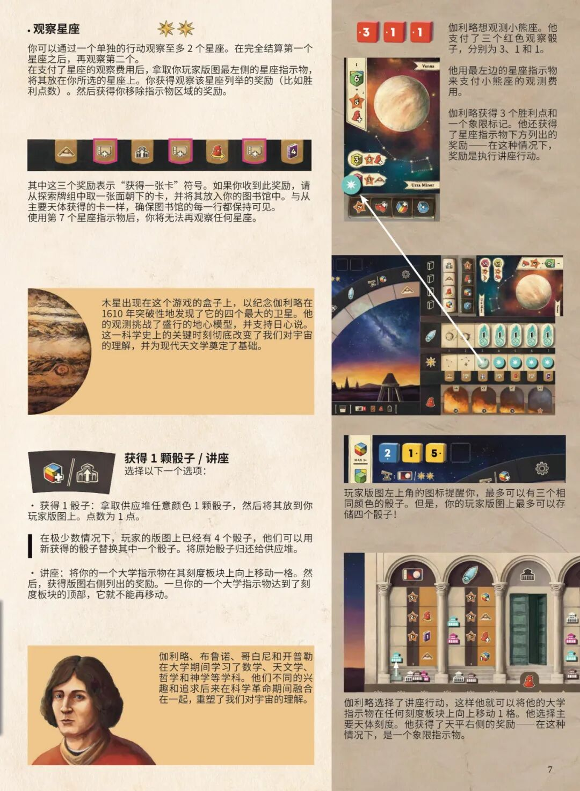
· 观察星座
你可以通过一个单独的行动观察至多 2 个星座。在完全结算第一个星座之后，再观察第二个。
在支付了星座的观察费用后，拿取你玩家版图最左侧的星座指示物，将其放在你所选的星座上。你获得观察该星座列出的奖励（比如胜利点数）。然后获得你移除指示物区域的奖励。
如果你收到「获得一张卡」符号的奖励，请从探索牌组中取一张面朝下的卡，并将其放入你的图书馆中。与从主要天体获得卡一样，确保图书馆的每行都保持可见。
使用第 7 个星座指示物后，你将无法再观察任何星座。
· 获得 1 颗骰子 / 讲座
选择以下一个选项：
- 获得 1 骰子：拿取供应堆任意颜色 1 颗骰子，然后将其放到你玩家版图上。点数为 1 点。
在极少数情况下，玩家的版图上已经有 4 个骰子，他们可以用新获得的骰子替换其中一个骰子。将原始骰子归还给供应堆。 - 讲座：将你的一个大学指示物在其刻度板块上向上移动一格。然后，获得板图右侧列出的奖励。一旦你的一个大学指示物达到了刻度板块的顶部，它就不能再移动。
示例：伽利略想观测小熊座，他支付了三个红色观察骰子（3、1 和 1），用最左边的星座指示物来支付小熊座的观察费用，获得 3 个胜利点和象限指示物，还获得星座指示物下方列出的奖励——执行讲座行动。玩家版图左上角的图标提醒你，最多可以有三个相同颜色的骰子，但玩家版图上最多可以存储四个骰子。伽利略选择讲座行动，将他的大学指示物向上移动 1 格，他选择主要天体刻度，获得了天平右侧的奖励——一个象限指示物。
木星出现在这个游戏的盒子上，以纪念伽利略在 1610 年突破性地发现了它的四个最大的卫星。他的观测挑战了盛行的地心模型，并支持日心说。伽利略、布鲁诺、哥白尼和开普勒在大学期间学习了数学、天文学、哲学和医学等学科，他们不同的兴趣和追求后来在科学革命期间融合在一起，重塑了我们对宇宙的理解。
六、发现彗星 · 升级
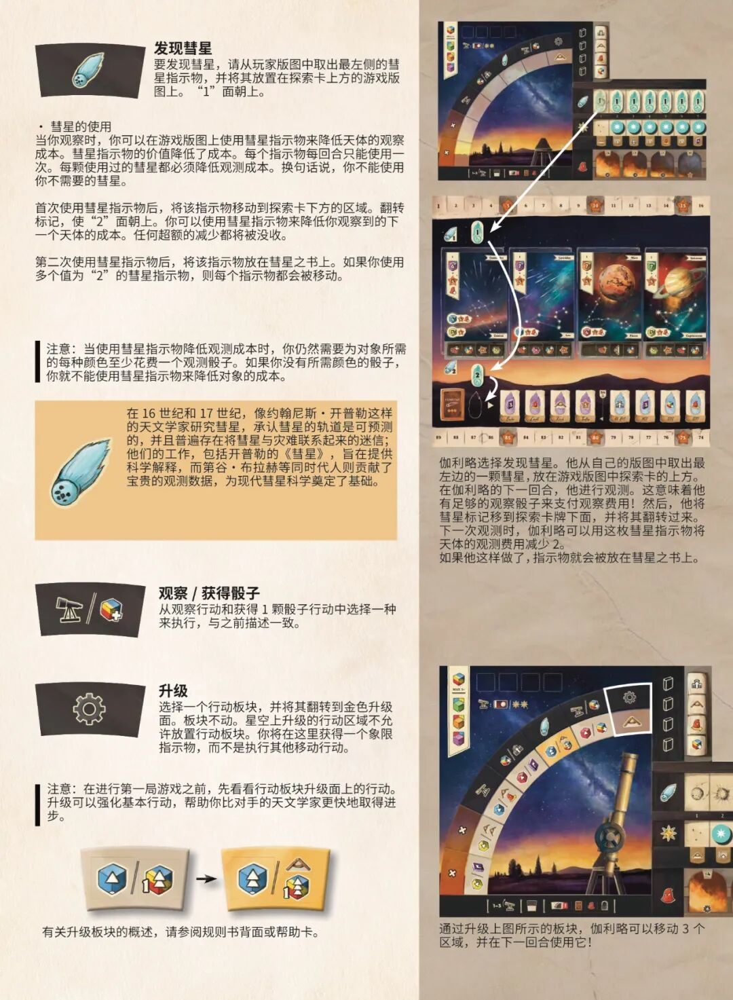
· 发现彗星
要发现彗星，请从玩家版图中取出最左侧的彗星指示物，并将其放置在探索卡上方的游戏版图上。「1」面朝上。
彗星的使用：当你观察时，你可以在游戏版图上使用彗星指示物来降低天体的观察成本。彗星指示物的价值降低了成本。每个指示物每回合只能使用一次。每颗使用过的彗星都必须降低观测成本。换句话说，你不能使用你不需要的彗星。
首次使用彗星指示物后，将该指示物移动到探索卡下方的区域。翻转标记，使「2」面朝上。你可以使用彗星指示物来降低你观察到的下一个天体的成本。任何超额的减少都将被没收。
第二次使用彗星指示物后，将该指示物放在彗星之书上。如果你使用多个值为「2」的彗星指示物，则每个指示物都会被移动。
注意：当使用彗星指示物降低观测成本时，你仍然需要为对象所需的每种颜色至少花费一个观测骰子。如果你没有所需颜色的骰子，你就不能使用彗星指示物来降低对象的成本。
· 观察 / 获得骰子
从观察行动和获得 1 颗骰子行动中选择一种来执行，与之前描述一致。
· 升级
选择一个行动板块，并将其翻转到金色升级行动面。板块不动。星空上升级行动区域不允许放置行动板块。你将在这里获得一个象限指示物，而不是执行其他移动行动。
注意：在进行第一局游戏之前，先看看行动板块升级面上的行动。升级可以强化基本行动，帮助你比对手的天文学家更快地取得进步。有关升级板块的概述，请参阅规则书背面或帮助卡。
示例：伽利略选择发现彗星，他从自己的版图中取出最左边的一颗彗星，放在游戏版图探索卡的上方。在他的下一回合，他进行观测——他有足够的观察骰子来支付观察费用！然后，他将彗星标记移到探索卡牌下面，并将其翻转过来。下一次观测时，伽利略可以用这枚彗星指示物将天体的观测费用减少 2。如果他这样做了，指示物就会被放在彗星之书上。通过升级图示的板块，伽利略可以移动 3 个区域，并在下一回合使用它。
七、移动行动与自由行动
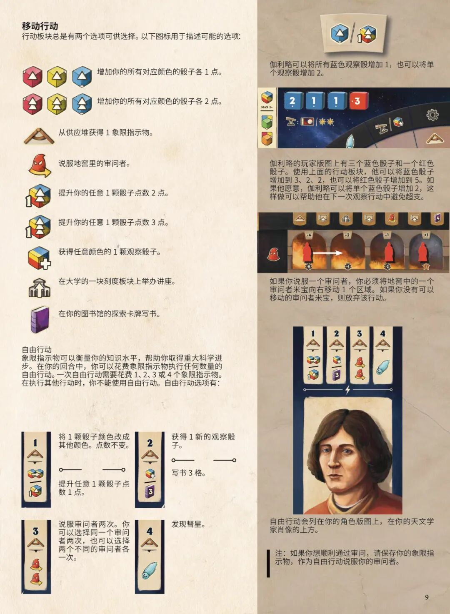
移动行动
行动板块总是有两个选项可供选择。以下图标用于描述可能的选项：
- 增加你的所有对应颜色的骰子各 1 点。
- 增加你的所有对应颜色的骰子各 2 点。
- 从供应堆获得 1 象限指示物。
- 说服地窖里的审问者。
- 提升你的任意 1 颗骰子点数 2 点。
- 提升你的任意 1 颗骰子点数 3 点。
- 获得任意颜色的 1 颗观察骰子。
- 在大学的一块刻度板块上举办讲座。
- 在你的图书馆的探索卡牌写书。
自由行动
象限指示物可以衡量你的知识水平，帮助你取得重大科学进步。在你的回合中，你可以花费象限指示物执行任何数量的自由行动。一次自由行动需要花费 1、2、3 或 4 个象限指示物。在执行其他行动时，你不能使用自由行动。自由行动选项有：
- 花费 1：将 1 颗骰子颜色改成其他颜色，点数不变；或提升任意 1 颗骰子点数 1 点。
- 花费 2：获得 1 新的观察骰子；或写书 3 格。
- 花费 3：说服审问者两次。你可以选择同一个审问者两次，也可以选择两个不同的审问者各一次。
- 花费 4：发现彗星。
注：如果你想顺利通过审问，请保存你的象限指示物，作为自由行动说服你的审问者。自由行动会列在你的角色版图上，在你的天文学家肖像的上方。
示例：伽利略可以将所有蓝色观察骰增加 1，也可以将单个观察骰增加 2。伽利略的玩家版图上有三个蓝色骰子和一个红色骰子，使用上面的行动板块，他可以将蓝色骰子增加到 3、2、2，也可以将红色骰子增加到 5。如果他愿意，伽利略可以将单个蓝色骰子增加 2，这样做可以帮助他在下一次观察行动中避免超支。如果你说服一个审问者，你必须将地窖中的一个审问者密室向右移动 1 个区域；如果你没有可以移动的审问者密室，则放弃该行动。
八、清理阶段 · 图书馆
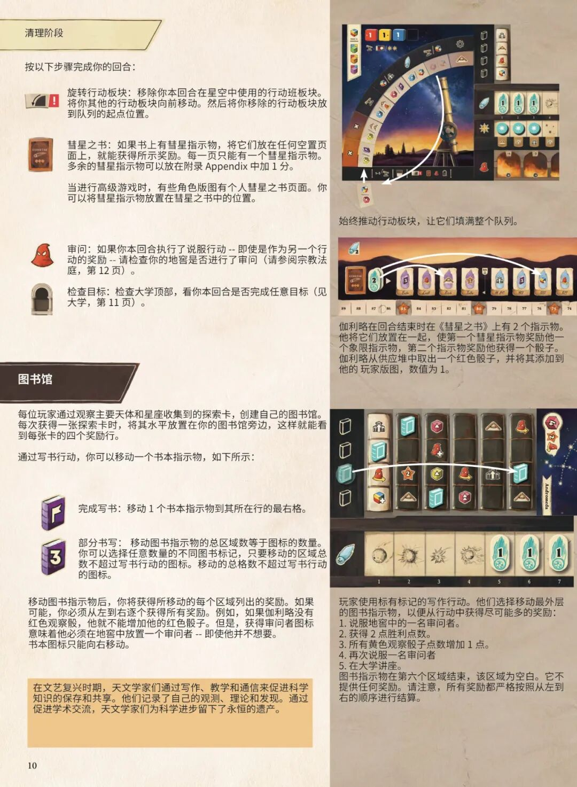
清理阶段
按以下步骤完成你的回合：
- 旋转行动板块：移除你本回合在星空中使用的行动板块。将你其他的行动板块向前移动。然后将你移除的行动板块放到队列的起始位置。
- 彗星之书：如果书上有彗星指示物，将它们放在任何空白页面上，就能获得所示奖励。每一页只能有一个彗星指示物。多余的彗星指示物可以放在附录 Appendix 中加 1 分。
当进行高级游戏时，有些角色版图有个人彗星之书页面。你可以将彗星指示物放置在彗星之书中的位置。 - 审问：如果你本回合执行了说服行动——即使是作为另一个行动的奖励——请检查你的地窖是否进行了审问（请参阅宗教法庭，第 12 页）。
- 检查目标：检查大学顶部，看你本回合是否完成任意目标（见大学，第 11 页）。
图书馆
每位玩家通过观察主要天体和星座收集到的探索卡，创建自己的图书馆。每次获得一张探索卡时，将其水平放置在你的图书馆旁边，这样就能看到每张卡的四个奖励行。
通过写书行动，你可以移动一个书本指示物，如下所示：
- 完成写书：移动 1 个书本指示物到其所在行的最右格。
- 部分书写：移动图书指示物的总区域数等于图标的数量。你可以选择任意数量的不同图书标记，只要移动的区域总数不超过写书行动的图标。移动的总格数不超过写书行动的图标。
移动图书指示物后，你将获得所移动的每个区域列出的奖励。如果可能，你必须从左到右逐个获得所有奖励。例如，如果伽利略没有红色观察骰，他就不能增加他的红色骰子。但是，获得审问者图标意味着他必须在地窖中放置一个审问者——即使他并不想要。书本图标只能向右移动。
示例：玩家使用标有标记的写作行动，选择移动最外层的图书指示物，以便从行动中获得尽可能多的奖励：①说服地窖中的一名审问者；②获得 2 点胜利点数；③所有黄色观察骰子点数增加 1 点；④再次说服一名审问者；⑤在大学讲座。图书指示物在第六个区域结束，该区域为空白，不提供任何奖励。请注意，所有奖励都严格按照从左到右的顺序进行结算。伽利略在回合结束时在《彗星之书》上有 2 个指示物，他将它们放置在一起，使第一个彗星指示物奖励他一个象限指示物，第二个指示物奖励他获得一个骰子——伽利略从供应堆中取出一个红色骰子，并将其添加到他的玩家版图，数值为 1。
九、大学
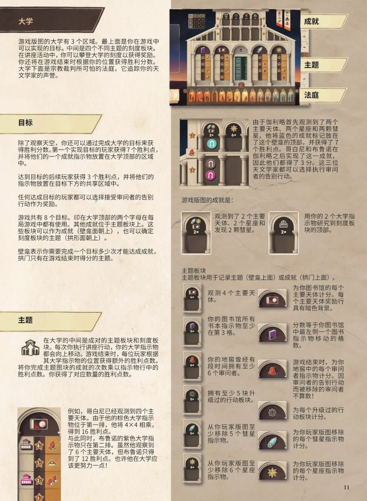
游戏版图的大学有 3 个区域。最上面的是你在游戏中可以实现的目标。中间是四个不同主题的刻度板块。在讲座活动中，你可以攀登大学的刻度以获得奖励。你还将在游戏结束时根据你的位置获得胜利分数。大学下面是宗教裁判所可怕的法庭，它追踪你的天文学家的声誉。
目标
除了观察天空，你还可以通过完成大学的目标来获得胜利分数。第一个实现目标的玩家获得 7 胜利点，并将他们的一个成就指示物放置在大学顶部的区域中。
达到目标的后续玩家获得 3 个胜利点，并将他们的指示物放置在目标下方的共享区域中。
任何达成目标的玩家都可以选择接受审问者的告别行动作为奖励。
游戏共有 8 个目标。印在大学顶部的两个在每局游戏中都有使用。其他成就位于主题板块上。这些板块可以作为成就（壁龛面朝上），也可以确定刻度板块的主题（拱形面朝上）。
壁龛表示你需要完成一个目标多少次才能达成成就，拱门只有在游戏结束时得分的主题。
主题
在大学的中间是成对的主题板块和刻度板块。每次你执行讲座行动，你的大学指示物都会向上移动。游戏结束时，每位玩家根据其大学指示物的位置获得额外的胜利点数。
将你完成主题图块的成就的次数乘以指示物行中的胜利点数。你获得了对应数量的胜利点数。
示例：哥白尼已经观测到四个主要天体。由于他的棕色大学指示物位于第一排，他将 4×4 相乘，得到 16 胜利点。与此同时，布鲁诺的紫色大学指示物只在第二排。虽然他观测到了 6 个主要天体，但布鲁诺只得到了 12 胜利点。也许他在大学应该更努力一点！
游戏版图的成就与主题板块一览
- 观测到了 2 个主要天体、2 个星座和发现 2 颗彗星（2×，成就）。
- 用你的 2 个大学指示物研究到刻度板块的顶部（2×，成就）。
- 主题：观测 4 个主要天体（4×）。
- 主题：为你图书馆的每个主要天体评分，每个主要天体奖励行动有暗色背景。
- 主题：你的图书馆所有书本指示物至少在第 3 格（3×）。
- 主题：分数等于你图书馆中最左侧一个图书指示物移动的格数。
- 主题：你的地窖曾经有段时间拥有至少 6 个审问者（6×）。
- 主题：游戏结束时，为你地窖中的每个审问者指示物计分。因审问者的告别行动而被移除的审问者不算数！
- 主题：拥有至少 5 块升级过的行动板块（5×）；为每个升级过的行动板块计分。
- 主题：从你玩家版图至少移除 5 个彗星指示物（5×）；为你玩家版图移除的每个彗星指示物计分。
- 主题：从你玩家版图至少移除 6 个星座指示物（6×）；为你玩家版图移除的每个星座指示物计分。
示例：由于伽利略首次观测到了两个主要天体、两个星座和两颗彗星，他将蓝色的成就标记放在了这个壁龛的顶部，并获得了 7 个胜利点。哥白尼和布鲁诺在伽利略之后实现了这一成就，因此他们都得了 3 分。这三位天文学家都可以选择执行审问者的告别行动。
十、宗教法庭与审问
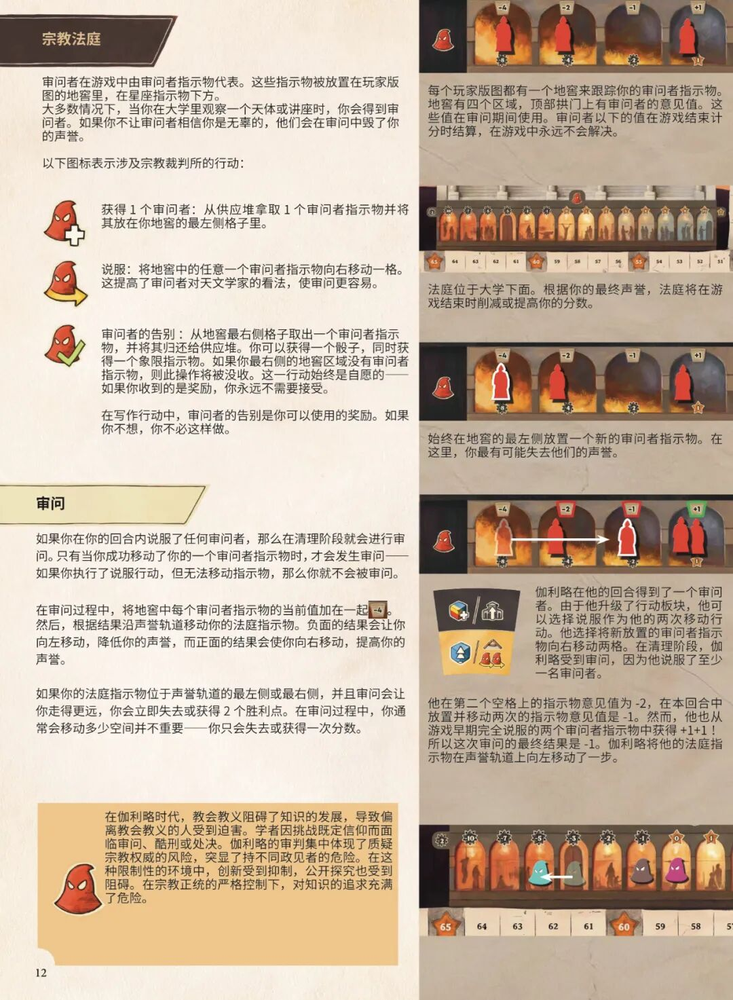
宗教法庭
审问者在游戏中由审问者指示物代表。这些指示物被放置在玩家版图的地窖里，在星座指示物下方。
大多数情况下，当你在大学里观察一个天体或讲座时，你会得到审问者。如果你不让审问者相信你是无辜的，他们会在审问中毁了你的声誉。
以下图标表示涉及宗教裁判所的行动：
- 获得 1 个审问者：从供应堆拿取 1 个审问者指示物并将其放在你地窖的最左侧格子里。
- 说服：将地窖中的任意一个审问者指示物向右移动一格。这提高了审问者对天文学家的看法，使审问更容易。
- 审问者的告别：从地窖最右侧格子取出一个审问者指示物，并将其归还给供应堆。你可以获得一个骰子，同时获得一个象限指示物。如果你最右侧的地窖区域没有审问者指示物，则此操作将被没收。这一行动始终是自愿的——如果你收到的是奖励，你永远不需要接受。
在写书行动中，审问者的告别是你可以使用的奖励。如果你不想，你不必这样做。
审问
如果你在你的回合内说服了任何审问者，那么在清理阶段就会进行审问。只有当你成功移动了你的一个审问者指示物时，才会发生审问——如果你执行了说服行动，但无法移动指示物，那么你就不会被审问。
在审问过程中，将地窖中每个审问者指示物的当前值加在一起。然后，根据结果沿声誉轨道移动你的法庭指示物。负面的结果会让你向左移动，降低你的声誉，而正面的结果会使你向右移动，提高你的声誉。
如果你的法庭指示物位于声誉轨道的最左侧或最右侧，并且审问会让你走得更远，你会立即失去或获得 2 个胜利点。在审问过程中，你通常会移动多少空间并不重要——你只会失去或获得一次分数。
在伽利略时代，教会教义阻碍了知识的发展，导致偏离教会教义的人受到迫害。学者因挑战既定信仰而面临审问、酷刑或处决。伽利略的审判集中体现了质疑宗教权威的风险，突显了持不同政见者的危险。在这种限制性的环境中，创新受到抑制，公开探索也受到阻碍。在宗教正统的严格控制下，对知识的追求充满了危险。
示例：每个玩家版图都有一个地窖来跟踪你的审问者指示物。地窖有四个区域，顶部拱门上有审问者的意见值，这些值在审问期间使用；审问者以下的值在游戏结束计分时结算，在游戏中永远不会解决（原书如此）。法庭位于大学下面，根据你的最终声誉，法庭将在游戏结束时削减或提高你的分数。始终在地窖的最左侧放置一个新的审问者指示物——在这里，你最有可能失去你的声誉。伽利略在他的回合得到了一个审问者，由于他升级了行动板块，他可以选择说服作为他的两次移动行动，他选择将新放置的审问者指示物向右移动两格。在清理阶段，伽利略受到审问，因为他说服了至少一名审问者。他在第二个空格上的指示物意见值为 -2，在本回合中放置并移动两次的指示物意见值是 -1；然而，他也从游戏早期完全说服的两个审问者指示物中获得 +1+1！所以这次审问的最终结果是 -1，伽利略将他的法庭指示物在声誉轨道上向左移动了一步。
十一、游戏结束与最终计分
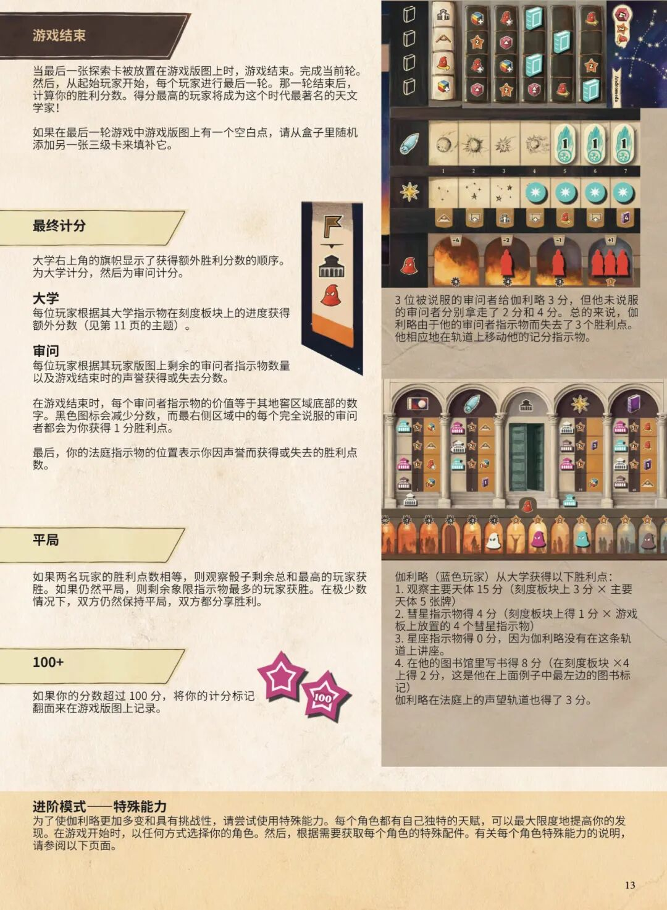
游戏结束
当最后一张探索卡被放置在游戏版图上时，游戏结束。完成当前轮。然后，从起始玩家开始，每个玩家进行最后一轮。那一轮结束后，计算你的胜利分数。得分最高的玩家将成为这个时代最著名的天文学家！
如果在最后一轮游戏中游戏版图上有一个空白点，请从盒子里随机添加另一张三级卡来填补它。
最终计分
大学右上角的旗帜显示了获得额外胜利分数的顺序。为大学计分，然后为审问计分。
- 大学：每位玩家根据其大学指示物在刻度板块上的进度获得额外分数（见第 11 页的主题）。
- 审问：每位玩家根据其玩家版图上剩余的审问者指示物数量以及游戏结束时的声誉获得或失去分数。
在游戏结束时，每个审问者指示物的价值等于其地窖区域底部的数字。黑色图标会减少分数，而最右侧区域中的每个完全说服的审问者都会为你获得 1 分胜利点。
最后，你的法庭指示物的位置表示你因声誉而获得或失去的胜利点数。
平局
如果两名玩家的胜利点数相等，则观察骰子剩余总和最高的玩家获胜。如果仍然平局，则剩余象限指示物最多的玩家获胜。在极少数情况下，双方仍然保持平局，双方都分享胜利。
100+
如果你的分数超过 100 分，将你的计分标记翻面来在游戏版图上记录。
示例：3 位被说服的审问者给伽利略 3 分，但未说服的审问者分别拿走了 2 分和 4 分——总的来说，伽利略由于他的审问者指示物而失去了 3 个胜利点，他相应地在轨道上移动他的记分指示物。伽利略（蓝色玩家）从大学获得以下胜利点：①观察主要天体 15 分（刻度板块上 3 分 × 主要天体 5 张牌）；②彗星指示物得 4 分（刻度板块上得 1 分 × 游戏板上放置的 4 个彗星指示物）；③星座指示物得 0 分，因为伽利略没有在这条轨道上讲座；④在他的图书馆里写书得 8 分（在刻度板块 ×4 上得 2 分，这是他在上面例子中最左边的图书标记）。伽利略在法庭上的声望轨道也得了 3 分。
十二、进阶模式：特殊能力
为了使伽利略更加多变和具有挑战性，请尝试使用特殊能力。每个角色都有自己独特的天赋，可以最大限度地提高你的发现。在游戏开始时，以任何方式选择你的角色。然后，根据需要获取每个角色的特殊配件。有关每个角色特殊能力的说明，请参阅以下页面。
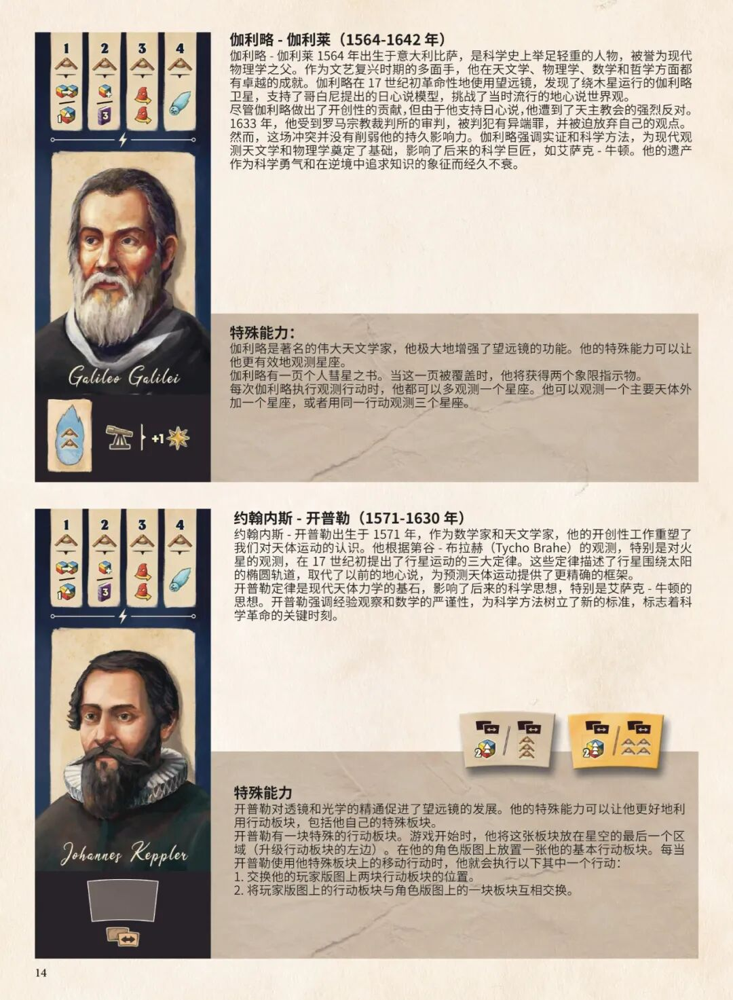
伽利略·伽利莱（1564–1642 年）
伽利略·伽利莱 1564 年出生于意大利比萨，是科学史上举足轻重的人物，被誉为现代物理学之父。作为文艺复兴以来的多面手，他在天文学、物理学、数学和哲学方面都有卓越的成就。伽利略在 17 世纪初革命性地使用望远镜，发现了绕木星运行的伽利略卫星，支持了哥白尼提出的日心说模型，挑战了当时流行的地心说世界观。
尽管伽利略做出了开创性的贡献，但由于他支持日心说，他遇到了天主教会的强烈反对。1633 年，他受到罗马宗教裁判所的审判，被判犯有异端罪，并被迫放弃自己的观点。然而，这场冲突并没有削弱他的持久影响力。伽利略强调实证和科学方法，为现代观测天文学和物理学奠定了基础，影响了后来的科学巨匠，如艾萨克·牛顿。他的遗产作为科学勇气和在逆境中追求知识的象征而经久不衰。
特殊能力：伽利略是著名的天文学家，他极大地增强了望远镜的功能。他的特殊能力可以让他更有效地观测星座。他有一页个人彗星之书，当这一页被覆盖时，他将获得两个象限指示物。每次伽利略执行观测行动时，他都可以多观测一个星座。他可以观测一个主要天体外加一个星座，或者用同一行动观测三个星座。
约翰内斯·开普勒（1571–1630 年）
约翰内斯·开普勒出生于 1571 年，作为数学家和天文学家，他的开创性工作重塑了我们对天体运动的认识。他根据第谷·布拉赫（Tycho Brahe）的观测，特别是对火星的观测，在 17 世纪初提出了行星运动的三大定律。这些定律描述了行星围绕太阳的椭圆轨道，取代了以前的地心说，为预测天体运动提供了更精确的框架。
开普勒定律是现代天体力学的基石，影响了后来的科学思想，特别是艾萨克·牛顿的思想。开普勒强调经验观察和数学的严谨性，为科学方法树立了新的标准，标志着科学革命的关键时刻。
特殊能力：开普勒对透镜和光学的精通促进了望远镜的发展。他的特殊能力可以让他更好地利用行动板块，包括他自己的特殊板块。游戏开始时，他将这张板块放在星空的最后一个区域（升级行动板块的左边），并在他的角色版图上放置一张他的基本行动板块。每当开普勒使用他特殊板块上的移动行动时，他就会执行以下其中一个行动：①交换他的玩家版图上两块行动板块的位置；②将玩家版图上的行动板块与角色版图上的一块板块互相交换。
尼古拉斯·哥白尼（1473–1543 年）
尼古拉斯·哥白尼 1473 年出生于波兰，他于 1543 年出版的开创性著作《论天体的旋转》（De revolutionibus orbium coelestium）重塑了我们对宇宙的认识。他挑战了当时流行的地心说模式，提出了将太阳置于太阳系中心的日心说。哥白尼的革命性理解为天体运动提供了更简单的解释，为科学革命铺平了道路，并影响了约翰内斯·开普勒和伽利略·伽利莱等后来的天文学家。他的贡献标志着我们对宇宙的认识发生了关键性的转变，对科学探索产生了持久的影响。
特殊能力：哥白尼是一位杰出的天文学家和数学家，对日心说模型做出了最重要的贡献，并广泛从行星运动的数学建模工作。这体现在他的特殊能力上，代表了他对自己图书馆的深入参与。哥白尼有一页个人的彗星之书，当它被覆盖时，他可以劝说两个不同的审问者指示物两次（每个指示物最多移动两格）。作为一个自由行动，每回合一次，哥白尼可以将他的一个特殊板块放入他的图书馆中，替换它们所覆盖的奖励，这一自由行动不会消耗任何象限指示物。他的每块特殊板块都不能遮盖书本指示物。这些板块不能延伸出图书馆——它们必须适合哥白尼探索卡的可用行列。你可以使用这些双面板块的任何一面，但不要将它们倒置。
焦尔达诺·布鲁诺（1548–1600 年）
焦尔达诺·布鲁诺出生于 1548 年，是意大利哲学家和宇宙学家，他的思想突破了传统思想的界限。布鲁诺超越哥白尼，提出了一个拥有无数世界的无限宇宙，主张宇宙多元化。然而，他大胆的理论与天主教会的教义相冲突，导致他在 1600 年因异端邪说而被谴责和处死。布鲁诺超越社会规范的探索意愿使他成为追求知识的殉道者，他大胆的思想在科学探索史上留下了不可磨灭的印记，强调了知识自由和挑战主流信仰的勇气的重要性。
特殊能力：布鲁诺的异端观点使他与宗教裁判所的交往极为困难，最终导致了他的死亡。正因为如此，布鲁诺在地窖中更难完全说服宗教审问者。不过，如果他成功了，回报也是巨大的！布鲁诺有两页个人彗星之书，当其中一页被覆盖时，布鲁诺可以劝说四次，根据自己的喜好进行分配；当另一页被覆盖时，布鲁诺可以升级他的一块行动板块。布鲁诺还有一块特殊的地窖板块，它可以覆盖玩家版图上的地窖。这块板块有五个区域，使他说服审问者更具挑战性。不过，每次有审问者标记移动到该区域时，他都会获得板块上显示的奖励。
十三、单人游戏：对抗第谷·布拉赫
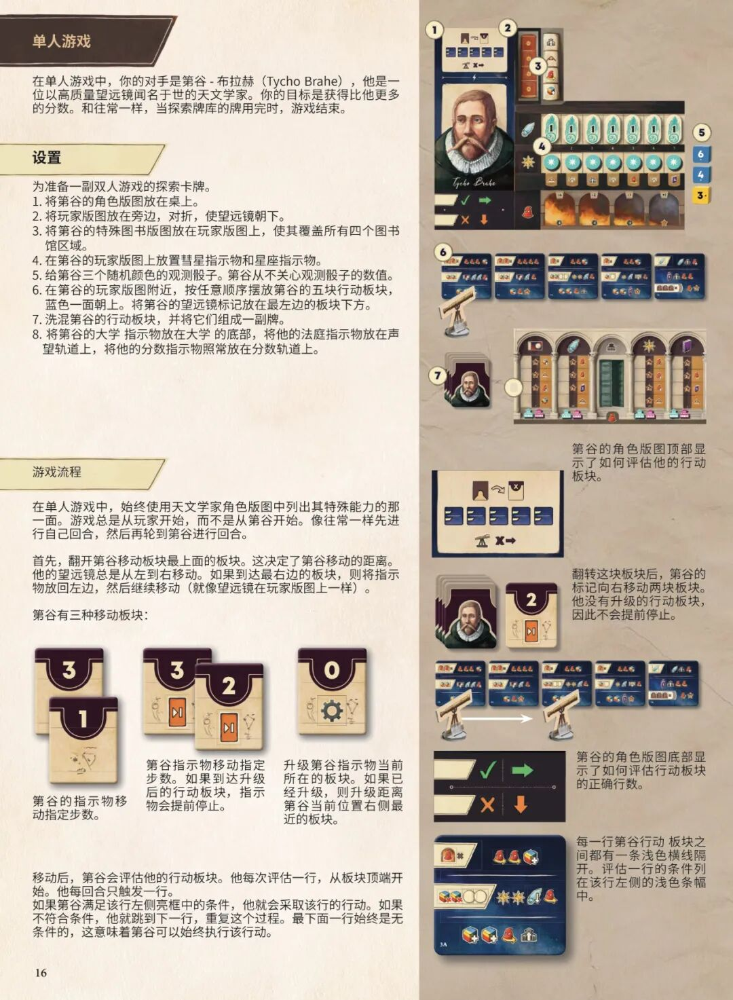
在单人游戏中，你的对手是第谷·布拉赫（Tycho Brahe），他是一位以高质量望远镜闻名于世的天文学家。你的目标是获得比他更多的分数。和往常一样，当探索牌库的牌用完时，游戏结束。
设置
为准备一副双人游戏的探索卡牌。
- 将第谷的角色版图放在桌上。
- 将玩家版图放在旁边，对折，使望远镜朝下。
- 将第谷的特殊图书版图放在玩家版图上，使其覆盖所有四个图书馆区域。
- 在第谷的玩家版图上放置彗星指示物和星座指示物。
- 给第谷三个随机颜色的观测骰子。第谷从不关心观测骰子的数值。
- 在第谷的玩家版图附近，按任意顺序摆放第谷的五块行动板块，蓝色一面朝上。将第谷的望远镜记号放在最左边的板块下方。
- 洗混第谷的行动板块，并将它们组成一副牌。
- 将第谷的大学指示物放在大学的底部，将他的法庭指示物放在声望轨道上，将他的分数指示物照常放在分数轨道上。
游戏流程
在单人游戏中，始终使用天文学家角色版图中列出其特殊能力的那一面。游戏总是从玩家开始，而不是从第谷开始。像往常一样先进行自己回合，然后再轮到第谷进行回合。
首先，翻开第谷移动板块最上面的板块。这决定了第谷移动的距离。他的望远镜总是从左到右移动。如果到达最右边的板块，则将指示物放回左边，然后继续移动（就像望远镜在玩家版图上一样）。
第谷有三种移动板块：
- 第谷的指示物移动指定步数。
- 第谷指示物移动指定步数。如果到达升级后的行动板块，指示物会提前停止。
- 升级第谷指示物当前所在的板块。如果已经升级，则升级距离第谷当前位置右侧最近的板块。
移动后，第谷会评估他的行动板块。他每次评估一行，从板块顶端开始。他每回合只触发一行。
如果第谷满足该行左侧亮框中的条件，他就会采取该行的行动。如果不符合条件，他就跳到下一行，重复这个过程。最下面一行始终是无条件的，这意味着第谷可以始终执行该行动。
示例：第谷的角色版图顶部显示了如何评估他的行动板块。翻转移动板块后，第谷的标记向右移动两块板块——他没有升级的行动板块，因此不会提前停止。第谷的角色版图底部显示了如何评估行动板块的正确行数。每一行第谷行动板块之间都有一条浅色横线隔开，评估一行的条件列在该行左侧的浅色条幅中。
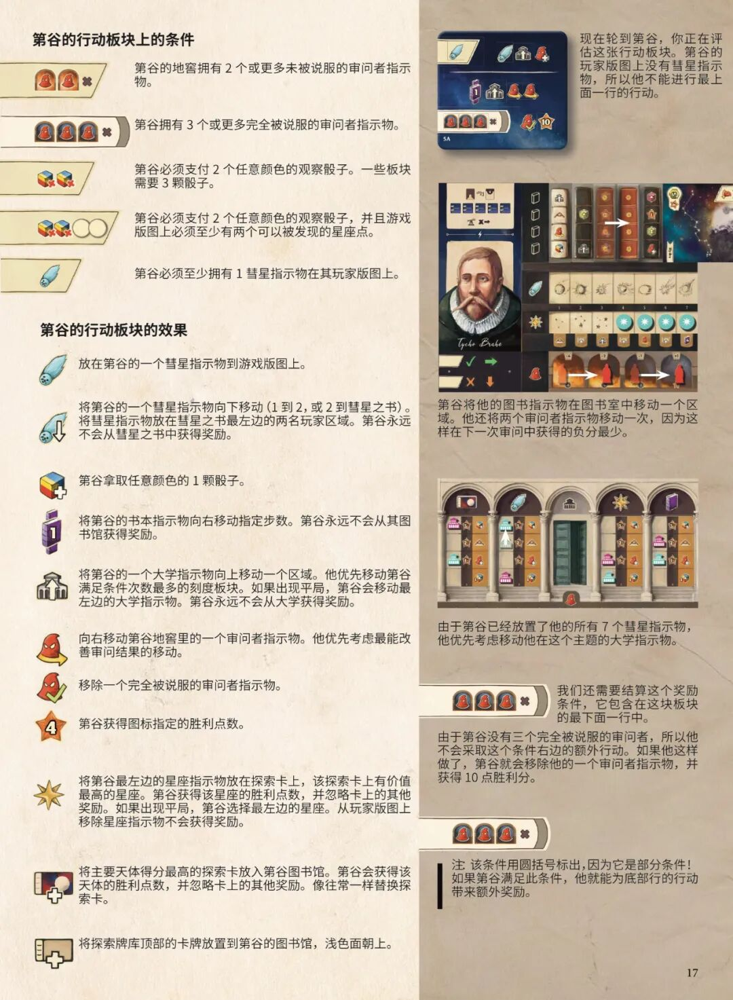
第谷的行动板块上的条件
- 第谷的地窖拥有 2 个或更多未被说服的审问者指示物。
- 第谷拥有 3 个或更多完全被说服的审问者指示物。
- 第谷必须支付 2 个任意颜色的观察骰子。一些板块需要 3 颗骰子。
- 第谷必须支付 2 个任意颜色的观察骰子，并且游戏版图上必须至少有两个可以被发现的星座点。
- 第谷必须至少拥有 1 彗星指示物在其玩家版图上。
第谷的行动板块的效果
- 放在第谷的一个彗星指示物到游戏版图上。
- 将第谷的一个彗星指示物向下移动（1 到 2，或 2 到彗星之书）。将彗星指示物放在彗星之书最左边的两名玩家区域。第谷永远不会从彗星之书中获得奖励。
- 第谷拿取任意颜色的 1 颗骰子。
- 将第谷的书本指示物向右移动指定步数。第谷永远不会从其图书馆获得奖励。
- 将第谷的一个大学指示物向上移动一个区域。他优先移动第谷满足条件次数最多的刻度板块。如果出现平局，第谷会移动最左边的大学指示物。第谷永远不会从大学获得奖励。
- 向右移动第谷地窖里的一个审问者指示物。他优先考虑最能改善审问结果的移动。
- 移除一个完全被说服的审问者指示物。
- 第谷获得图标指定的胜利点数。
- 将第谷最左边的星座指示物放在探索卡上，该探索卡上有价值最高的星座。第谷获得该星座的胜利点数，并忽略卡上的其他奖励。如果出现平局，第谷选择最左边的星座。从玩家版图上移除星座指示物不会获得奖励。
- 将主要天体得分最高的探索卡放入第谷图书馆。第谷会获得该天体的胜利点数，并忽略卡上的其他奖励。像往常一样替换探索卡。
- 将探索牌库顶部的卡牌放置到第谷的图书馆，浅色面朝上。
示例：第谷的玩家版图上没有彗星指示物，所以他不能进行最上面一行的行动。第谷将他的图书指示物在图书室中移动一个区域，他还将两个审问者指示物移动一次，这样在下一次审问中获得的负面最少。由于第谷已经放置了他的所有 7 个彗星指示物，他优先考虑移动他在这个主题的大学指示物。我们还需要结算这个奖励条件，它包含在这块板块的最下面一行中。由于第谷没有三个完全被说服的审问者，所以他不会采取这个条件右边的额外行动；如果他这样做了，第谷就会移除他的一个审问者指示物，并获得 10 点胜利分。注：该条件用圆括号标出，因为它是部分条件——如果第谷满足此条件，他就能为底行的行动带来额外奖励。
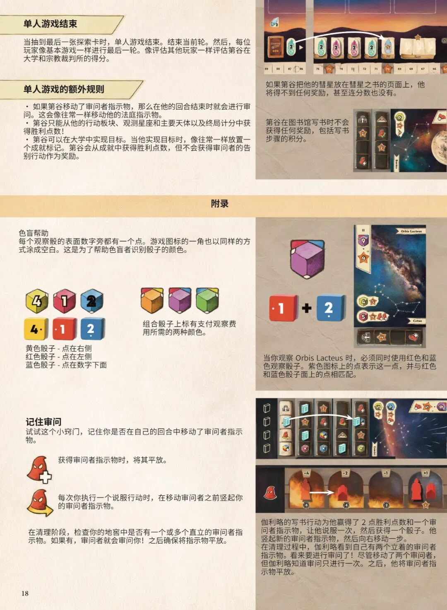
单人游戏结束
当抽到最后一张探索卡时，单人游戏结束。结束当前轮。然后，每位玩家像基本游戏一样进行最后一轮。像评估其他玩家一样评估第谷在大学和宗教裁判所的得分。
单人游戏的额外规则
- 如果第谷移动了审问者指示物，那么在他的回合结束时就会进行审问。这会像往常一样移动他的法庭指示物。
- 第谷只能从他的行动板块、观测星座和主要天体以及终局计分中获得胜利点数！
- 第谷可以在大学中实现目标。当他实现目标时，像往常一样放置一个成就标记。第谷会从成就中获得胜利点数，但不会获得审问者的告别行动作为奖励。
示例：如果第谷把他的彗星放在彗星之书的页面上，他将得不到任何奖励，甚至连分数也没有。第谷在图书馆写书时不会获得任何奖励，包括写书步骤的积分。
十四、附录
色盲帮助
每个观察骰的表面数字旁都有一个点。游戏图标的一角也以同样的方式涂成空白。这是为了帮助色盲者识别骰子的颜色。
- 黄色骰子——点在右侧
- 红色骰子——点在左侧
- 蓝色骰子——点在数字下面
组合骰子上标有支付观察费用所需的两种颜色。
示例：当你观察 Orbis Lacteus 时，必须同时使用红色和蓝色观察骰子。紫色图标上的点表示这一点，并与红色和蓝色骰子面上的点相匹配。
记住审问
试试这个小窍门，记住你是否在自己的回合中移动了审问者指示物。
- 获得审问者指示物时，将其平放。
- 每次你执行一个说服行动时，在移动审问者之前竖起你的审问者指示物。
在清理阶段，检查你的地窖中是否有一个或多个直立的审问者指示物。如果有，审问者就会审问你！之后确保将指示物平放。
示例：伽利略的写书行动为他赢得了 2 点胜利点数和一个审问者指示物，让他说服一次，然后获得一个骰子。他竖起新的审问者指示物，然后向右移动一步。在清理过程中，伽利略看到自己有两个立着的审问者指示物——看来要进行审问了！尽管移动了两个审问者，但伽利略知道审问只进行一次。之后，他将审问者指示物平放。
十五、图标速查
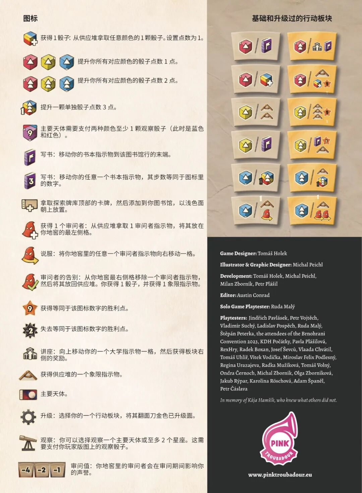
- 获得 1 骰子：从供应堆拿取任意颜色的 1 颗骰子。设置点数为 1。
- 提升 1 点 / 2 点：提升你所有对应颜色的骰子点数 1 点 / 2 点。
- 提升 3 点：提升一颗单独骰子点数 3 点。
- 主要天体：需要支付两种颜色至少 1 颗观察骰子（此时是蓝色和红色）。
- 写书（末端）：移动你的书本指示物到该图书馆行的末端。
- 写书（数字）：移动你的任意一个书本指示物，其步数等同于图标里的数字。
- 拿卡：拿取探索牌库顶部的卡牌，然后添加到你图书馆，以浅色面朝上放置。
- 获得 1 个审问者：从供应堆拿取 1 审问者指示物，将其放在你地窖的最左侧格。
- 说服：将你地窖里的任意一个审问者指示物向右移动一格。
- 审问者的告别：从你地窖最右侧格移除一个审问者指示物，然后将其放回供应堆。你获得 1 骰子，并获得 1 象限指示物。
- 胜利点：获得 / 失去等同于该图标数字的胜利点。
- 讲座：向上移动你的一个大学指示物一格，然后获得板块右侧的奖励。
- 象限：获得供应堆的一个象限指示物。
- 主要天体图标。
- 升级：选择你的一个行动板块，将其翻面刀金色已升级面（原书如此，「刀」应为「到」）。
- 观察：你可以选择观察一个主要天体或至多 2 个星座。这需要支付你玩家版图上的观察骰子。
- 审问值（-4/-2/-1/+1）：你地窖里的审问者会在审问期间影响你的声誉。
十六、设计者与致谢
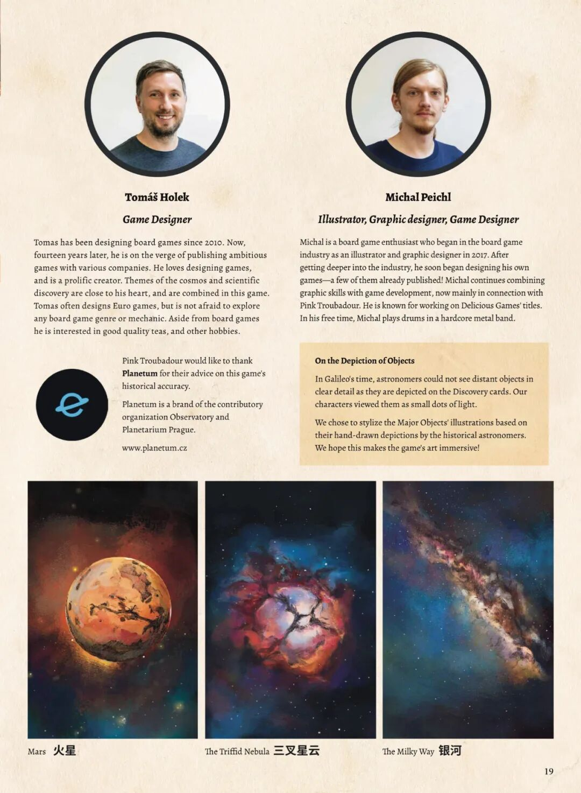
Tomáš Holek（Game Designer）：Tomas has been designing board games since 2010. Now, fourteen years later, he is on the verge of publishing ambitious games with various companies. He loves designing games, and is a prolific creator. Themes of the cosmos and scientific discovery are close to his heart, and are combined in this game. Tomas often designs Euro games, but is not afraid to explore any board game genre or mechanic.
Michal Peichl（Illustrator, Graphic designer, Game Designer）：Michal is a board game enthusiast who began in the board game industry as an illustrator and graphic designer in 2017. After getting deeper into the industry, he soon began designing his own games—a few of them already published! Michal continues combining graphic skills with game development, now mainly in connection with Pink Troubadour. He is known for working on Delicious Games' titles. In his free time, Michal plays drums in a hardcore metal band.
Pink Troubadour would like to thank Planetum for their advice on this game's historical accuracy. Planetum is a brand of the contributory organization Observatory and Planetarium Prague.（www.planetum.cz）
On the Depiction of Objects：In Galileo's time, astronomers could not see distant objects in clear detail as they are depicted on the Discovery cards. Our characters viewed them as small dots of light. We chose to stylize the Major Objects' illustrations based on their hand-drawn depictions by the historical astronomers. We hope this makes the game's art immersive!
制作人员
- Game Designer：Tomáš Holek
- Illustrator & Graphic Designer：Michal Peichl
- Development：Tomáš Holek, Michal Peichl, Milan Zborník, Petr Plášil
- Editor：Austin Conrad
- Solo Game Playtester：Ruda Malý
- Playtesters：Jindřich Pavlásek, Petr Vojtěch, Vladimír Suchý, Ladislav Pospěch, Ruda Malý, Štěpán Peterka, the attendees of the Brnohrani Convention 2023, KDH Počátky, Pavla Plášilová, RexHry, Radek Boxan, Josef Ševčík, Vlaada Chvátil, Tomáš Uhlíř, Vitek Vodička, Miroslav Felix Podlesný, Regina Urazajeva, Radka Můžiková, Tomáš Volný, Ondra Černoch, Michal Zborník, Olga Zborníková, Jakub Rýpar, Karolína Röschová, Adam Španěl, Petr Čáslava
In memory of Kája Hamšík, who knew what others did not.
出版：PINK TROUBADOUR（www.pinktroubadour.eu）